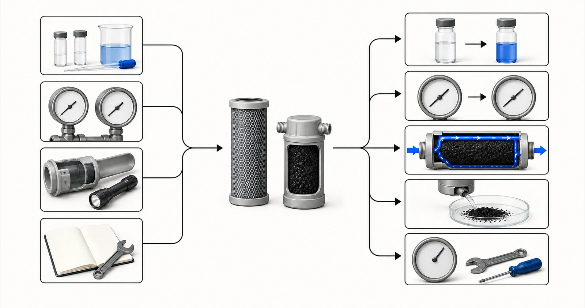

Tiesioginis atsakymas
Anglies filtro keitimas turėtų būti pradėtas pagal patvirtintą aptarnavimo pagrindą, o ne vieną universalų mėnesių skaičių. Atitinkami signalai gali apimti tikslinio junginio proveržį, patvirtinto jutimo galutinio taško praradimą, apdorotą tūrį, slėgio praradimą, srauto pasikeitimą, terpės būklę, sanitarinius įvykius arba patikrintas sertifikuoto galutinio produkto instrukcijas. Trikčių šalinimas pradedamas atskiriant adsorbcijos išeikvojimą nuo hidraulinio užsikimšimo, kanalizacijos, aplinkkelio, smulkių dalelių, biologinio augimo, mėginių ėmimo klaidos ir vandens keitimo prieš srovę. Yuchen Water gali peržiūrėti vandens ataskaitą, eksploatavimo istoriją, išsamią kasetės ar laivo informaciją ir stebėjimo įrašus, kad pagrįstų medžiagų ir keitimo kryptį, tačiau norint nustatyti tikslų techninės priežiūros intervalą, reikia įrodymų apie tikrąjį vandenį, srautą ir konstrukciją.
Pradėkite nuo pirkėjo problemos
Toks skundas, kaip kvapo grįžimas, gali rodyti proveržį, bet taip pat gali atsirasti dėl naujo šaltinio vandens įvykio, užteršimo pasroviui, aplinkkelio ar mėginių ėmimo problemos. Mažas srautas gali rodyti užsikimšimą, o ne išnaudotą adsorbcijos pajėgumą. Juodos dalelės gali atsirasti dėl nepakankamo pradinio praplovimo, pažeistų sulaikymo komponentų arba sluoksnio trikdymo. Kiekvieną simptomą traktuojant kaip tą patį gedimą, kasetės švaistomos ir tikroji sistemos rizika gali likti neišspręsta.
Todėl eksploatavimo įrašas yra gaminio įrodymų dalis. Įrašykite montavimo datą, laikmenos arba kasetės tapatybę, partiją, jei įmanoma, pradinį praplovimą, kaupiamąjį arba numatomą apdorotą tūrį, vidutinį ir didžiausią srautą, slėgį prieš ir po etapo, analizės rezultatus, sanitariją ir neįprastus šaltinio įvykius. Naudinga pakeitimo programa konvertuoja šiuos įrašus į veiksmo taisyklę ir saugo atsargines medžiagas prieš pasiekiant paleidiklį.

- Proveržis arba šaltinio vandens pasikeitimas
- Slėgio kritimo apribojimas
- Aplenkimo arba srauto kelio problema
- Anglies baudos arba sulaikymo žala
- Stagnacija arba sanitarijos problema
Konceptuali iliustracija. Ne bandymo rezultatai, gaminio sertifikavimas ar inžinerinis brėžinys.
Kokia ataskaita ir veiklos duomenys reikalingi
Siųsti dabartinius vandens duomenis ir gedimų istoriją. Nuotraukos gali paremti konstrukcijos apžvalgą, tačiau jos nepakeičia chemijos, srauto, slėgio ir mėginių ėmimo informacijos.
- šaltinio-vandens ataskaitą ir bet kokius pokyčius po anglies sumontavimo
- tikslinis junginys arba galutinis taškas ir prieš/po analizės rezultatų
- įrengimo data, kasetės arba laikmenos tapatybė, partija ir apdorotas tūris, jei žinoma
- vidutinis ir didžiausias srautas, dienos trukmė ir sąstingio laikotarpiai
- įleidimo ir išleidimo slėgio arba slėgio skirtumo tendencija
- pradinio plovimo, sanitarijos, atgalinio plovimo ir kiti techninės priežiūros įrašai
- prieš srovę esančių nuosėdų būklę ir pasroviui skirtos įrangos simptomus
- šiuo metu naudojamos mėginių ėmimo vietos, metodas, laikas ir pakeitimo taisyklė
Ataskaita turi būti pakankamai nauja, kad atspindėtų siūlomą šaltinį ir joje turi būti nurodyta pavyzdžio data ir vieta. Jei vanduo keičiasi pagal sezoną, gamybos partiją ar veikimo būseną, nurodykite diapazoną, o ne vieną patogų rezultatą. Nurodykite reikiamą išvalyto vandens tikslą atskirai nuo dabartinės analizės. Kai reikšmė nežinoma, pažymėkite ją kaip nežinomą; matomas tarpas yra saugesnis nei spėjamas skaičius.
Hidraulinė informacija priklauso šalia chemijos. Vien tik vidutinis srautas gali paslėpti trumpas piko sąlygas, pertraukiamą darbą ir ilgą sąstingį. Patvirtinkite dienos veikimo trukmę, didžiausią paklausą, galimą slėgį, leistiną slėgio nuostolį, įrangos matmenis ir WHO stebės ir pakeis anglį. Šios detalės nusprendžia, ar tinkama laikmena gali būti naudojama aptarnaujamoje sistemoje.
Pasirinkimo logika
Jei tikslinis junginys atsiranda po anglies, o srautas ir slėgis išlieka normalūs, pirmiausia ištirkite proveržį, šaltinio įkėlimą ir mėginių ėmimą. Patvirtinkite, kad įleidimo angos koncentracija ir konkuruojančios sudedamosios dalys nepasikeitė, ar mėginiai atitinka teisingus prievadus ir kad analizės metodas yra tinkamas. Palyginkite rezultatą su sutartu veiksmų lygiu; nelaukite matomo ar jutimo pokyčio, kai naudotojai negali patikimai aptikti taikinio.
Jei slėgio skirtumas didėja arba srautas sumažėja, patikrinkite prieš srovę kietųjų dalelių kontrolę, kasetės užsikimšimą, sluoksnio tankinimą ir vožtuvo padėtį. Adsorbcijos terpės pakeitimas nepakoreguojant kietųjų dalelių kiekio gali greitai atkurti gedimą. Jei slėgis yra neįprastai mažas dėl netinkamo apdorojimo, patikrinkite aplinkkelį, sandariklius, vidinius skirstytuvus, kanalus arba trūkstamą terpę. Laivo patikrinimo ir saugios izoliacijos procedūros turi atitikti įrangos projektą.
Jei atsiranda smulkių nuosėdų, peržiūrėkite anglies dalelių specifikacijas, sulaikymo ekranus, įrengimo pažeidimus, transportavimo, plovimo ir atgalinio plovimo sąlygas. Jei dėl kvapo ar mikrobiologinių problemų kyla sąstingis, peržiūrėkite sanitariją, temperatūrą, prastovos laiką ir paskesnį užterštumą. Aktyvuota anglis nėra dezinfekavimo programa, todėl išnaudotos arba prastai prižiūrimos scenos negalima palikti eksploatuoti vien dėl to, kad slėgis išlieka priimtinas.
Pirminis apdorojimas, įranga ir veikimo kontekstas
Pakeitimo plane turėtų būti nurodytas įprastas aktyviklis, išankstinio įspėjimo rezultatas, didžiausias leistinas aptarnavimo limitas, jei jis palaikomas, atsakingas asmuo ir veiksmai, kai trūksta duomenų. Pramoninėse švino atsilikimo lovose gali būti naudojamas stebėjimas ir padėties pasukimas, o kasečių programose gali būti naudojamas apdorotas tūris, patikrintos instrukcijos ir periodiniai bandymai. Tas pats intervalas neturėtų būti kopijuojamas tarp svetainių, kuriose vandens kokybė ir paklausa skiriasi.
Pakeitę dokumentuokite naują terpę arba kasetę, nuplaukite arba paleiskite ją pagal patvirtintą procedūrą, atkurkite pradinę mėginių ėmimo liniją ir patvirtinkite slėgio bei vandens kokybę. Pakartotinis ankstyvas gedimas yra įrodymas, kad reikia dar kartą apsilankyti gydymo traukinyje, o ne tiesiog sutrumpinti kalendorių. Yuchen Water gali palaikyti pakaitinių medžiagų tiekimą, suderinamumo patikras ir susijusios įrangos trikčių šalinimą pagal pateiktus įrašus.
Dažnos klaidos
- Kiekvienam šaltinio vandeniui ir srautui naudojamas vienas keitimo intervalas
- Adsorbcijos išsekimo diagnozavimas vien dėl slėgio praradimo
- Anglies pakeitimas netikrinant prieš srovę kietųjų dalelių arba sistemos aplinkkelio
- Nepaisydami sąstingio, sanitarijos ir biologinių sąlygų
- Nepavyko įrašyti įdiegtos partijos, apdoroto tūrio ir prieš/po mėginių ėmimo
Įrodymai ir paslaugų teikimo riba
Joks puslapis ar citata neturėtų žadėti tarnavimo laiko neapibrėžus vandens, tikslo, laikmenos, konstrukcijos, srauto ir galutinio taško. Turi būti laikomasi gamintojo patvirtintų galutinio produkto nurodymų; jis nėra automatiškai perkeliamas į OĮG variantą. Pramoniniai intervalai turėtų būti pagrįsti stebėjimu, atitinkamais įrodymais arba kvalifikuotomis projektavimo prielaidomis.
Techninė peržiūra gali nustatyti galimus gedimų režimus, trūkstamus duomenis ir pakeitimo parinktis, tačiau nuotolinė peržiūra negali pakeisti saugios vietos apžiūros. Operatorius lieka atsakingas už izoliavimą, tvarkymą, sanitariją, mėginių ėmimą ir grąžinimą į eksploataciją. Yuchen Water veiklos sritis yra medžiagų tiekimas ir įrangos techninė pagalba, pagrįsta gauta informacija.
Yuchen Water pirmiausia peržiūri tikslą ir įrodymus, tada nustato atitinkamus anglies formato ir medžiagos klausimus, pagrindžiančius išankstinio apdorojimo ir įrangos poreikius bei dar reikalingus dokumentus ar bandymus. Išvestis gali būti preliminari nuoroda, prašymas dėl trūkstamos informacijos arba palaikomos medžiagos ir įrangos rekomendacija. Rekomendacija nepateikiama vien todėl, kad pirkėjas pateikė produkto pavadinimą.
Po tiekimo techninė pagalba gali apimti dokumentų patvirtinimą, montavimo ir praplovimo klausimus, nuotolinio paleidimo nurodymus, stebėjimo taškus ir pakeitimo planavimą sutartoje apimtyje. Faktinis veikimas vis tiek priklauso nuo patvirtintos medžiagos, visos įrangos, šaltinio vandens, įrengimo, eksploatavimo ir priežiūros. Paskelbtos gairės negali pakeisti projekto peržiūros.
Kol nėra peržiūrėta ataskaita, konstrukcija, įrodymai ir eksploatavimo sąlygos, nežadama galutinė medžiaga, talpa, tarnavimo laikas, pašalinimo procentas ar projekto rezultatas.
Oficialūs techniniai šaltiniai
Šie šaltiniai paaiškina gydymo principus arba sertifikavimo ribas. Jie nesertifikuoja Yuchen Water produktų ir nepakeičia su projektu susijusių įrodymų.
Susijusios aktyvintos anglies gairės
Tęskite žinių grupę, peržiūrėkite pasirinktus įrodymų pavyzdžius tik neviršydami nustatytų ribų, palyginkite produktų formatus arba pateikite ataskaitą techninei peržiūrai.